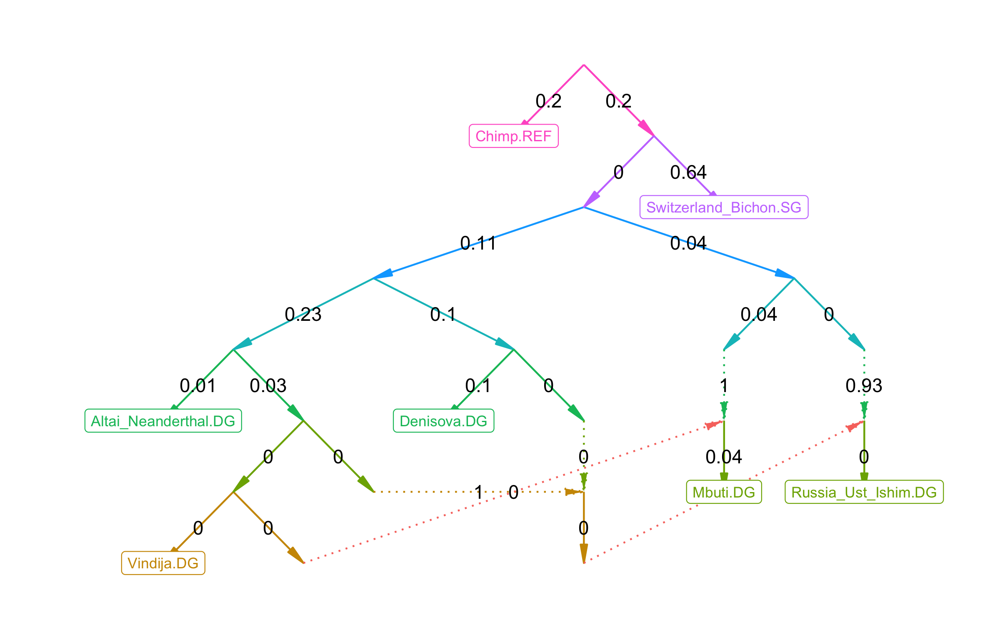

Lightweight R implementations of some AdmixTools programs.
If you already have precomputed f2-statistics, you can fit an admixture graph like this:
f2_dir = '/n/groups/reich/robert/projects/admixprograms/f2blocks_v42.1/'
fit = qpgraph(graph1, f2_dir = f2_dir)
plot_graph(fit$edges)
You can also use these f2-statistics to estimate admixture weights:
target = 'Denisova.DG'
left = c('Altai_Neanderthal.DG', 'Vindija.DG')
right = c('Chimp.REF', 'Mbuti.DG', 'Russia_Ust_Ishim.DG', 'Switzerland_Bichon.SG')
qpadm(target, left, right, f2_dir = f2_dir)More documentation here.